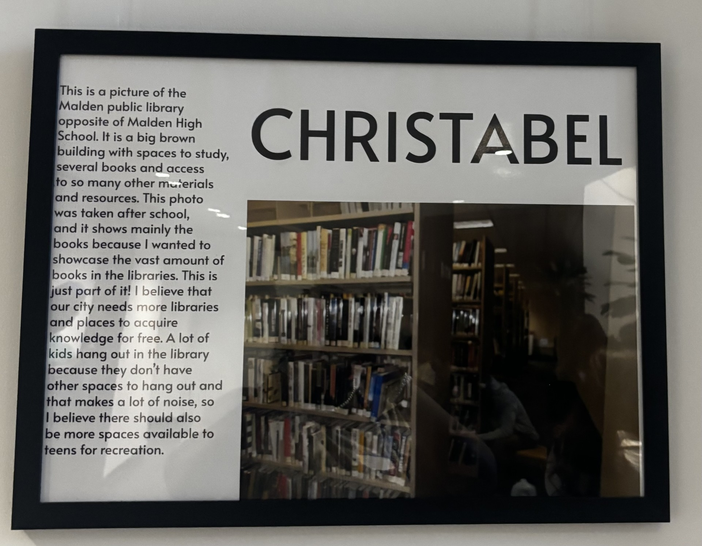

Christabel Okhihan
UMass Boston Student
Computer science major
UMass Boston


I am Christabel Okhihan, A first year student at the University of massachussets Boston, I am a computer science student with a passion for software development, user interface and user experience design and digital Illustration. I enjoy how tech and visual design can work together to create thouhtful, accessible digital experiences.
I am on a journey to develop -ui that use my skills in software development and design. Through academic coursework, collaborative projects, and independent creative work, I am continuing to develop both my techincal and design skills.

Original photograph by Christabel Okhihan. Feautured in a photgraphy exhibition funded by CHA malden.
During my free time, I like to write, draw and read. Ienjoy watching series and doing art related activities.
Education and Achievemnets
University of Massachusetts Boston, B.S. in computer science (in-progress)
Malden High School, class of 2026 (Jan 2025 - June 2026)
National Honor ociety member (Nov 2025 - June 2026)
Girls Who Code member/ Technovation participant (Oct 2025 - June 2026)
Photovoice exhibition participation
Current Focus
- Front-end development:Strengthening skills in HTML, CSS, and JavaScript.
- UI/UX Design: Exploring user-centered design principles and techniques while learning how to create visually appealing, accessible, and user friendly digital experiences.
- Creative technology: Finding ways to combine art and technology to create innovative solutions.
- Writing: Focusing on developing writing skills as I work toward writing my own book.
Background & Interests
Originally from Nigeria, I moved to the United States to continue my education and explore new opportunities. My exepriences have shaped my perspective and encoraged me to pursue both my academic and creative intrests. I ahve always been drawn to creativity, particularly through art, photograhy, and storytelling. Over time I developed an intrest in technology and became curious anout how computer science can be used to solve real-world problems and how I coudl use design and tech to create useful digital projects
Contact
| c.okhihan001@umb.edu | |
 |
College of Science and Mathematics University of Massachusetts Boston Boston, MA 02215 |